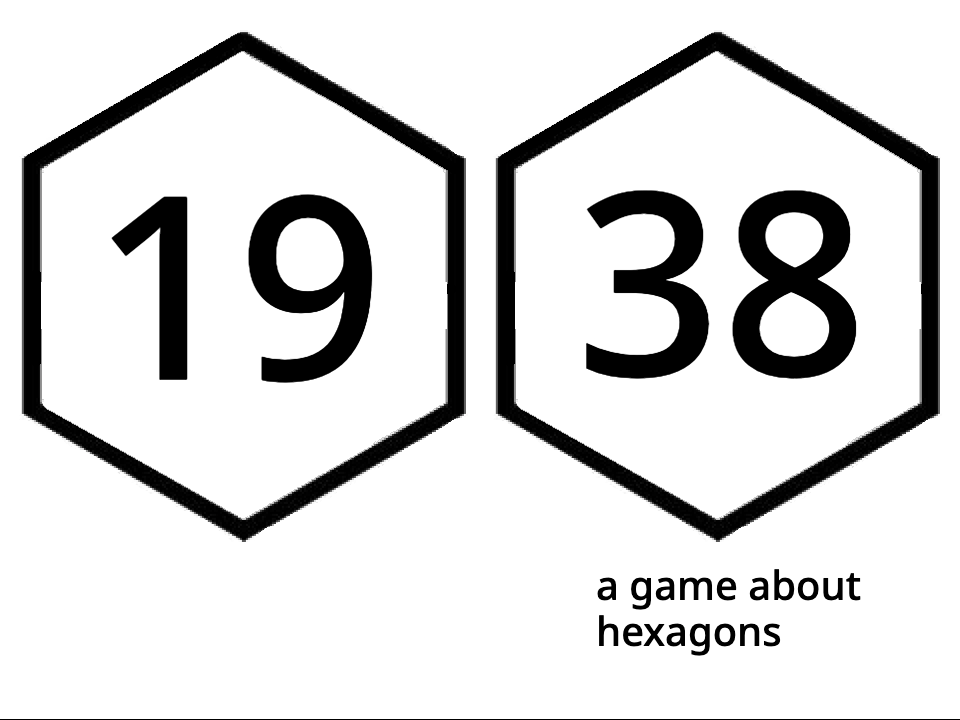
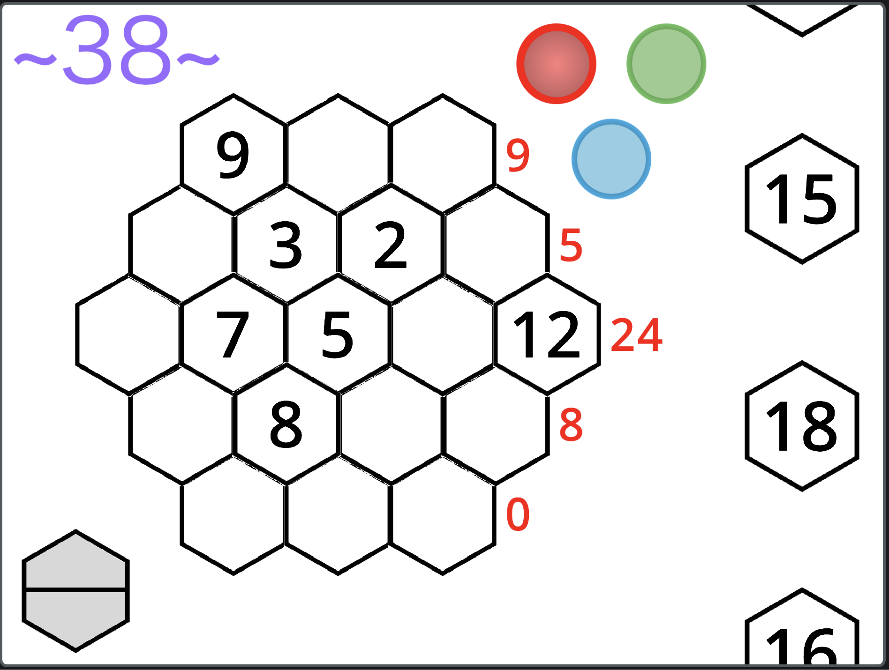

1938 Hexagons is a minigame based around the order-3 magic hexagon.

1938 Hexagons is the second thing and final thing I published that was made in Scratch (thus far), and there were some questionable design choices made. For instance, each individual digit is its own sprite. If I were to reformat the code today, I would use a combination of public and private variables along with the "when I start as a clone" block to simulate actual constructors that you can pass arguments to.
There’s another glaring bug that has to do with selecting hexagons that are layered under or over existing hexagons. That one, I have less of an idea how to fix.

1938 Hexagons shows that I have been trying to share an interest in maths in an interactive way for as long as I can remember. The other published minigame was a dice roller designed to showcase the seven non-transitive Oskar Dice, with an unfinished system that gave you achievements that would be tied to your account (???) for things like resetting the count with somebody 100 in the hole ("Sore Loser") or rolling three even numbers ("Steven") or clicking the achievement popup ten times ("Egghead").